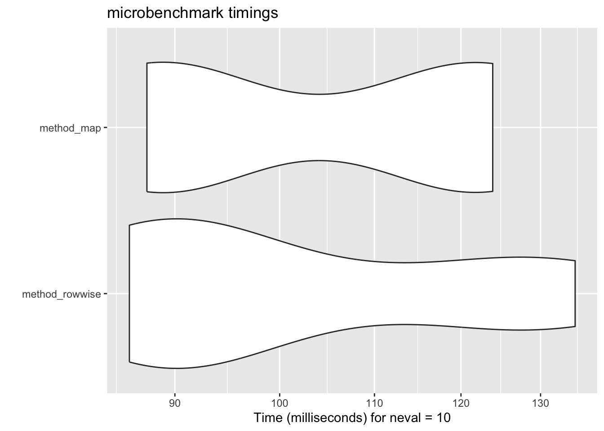

library(tidyverse)
library(palmerpenguins)20 Making R Faster
R has the bad reputation of being slow. This is true, compared to other languages like C++ or Julia. So if you are really serious about performance, you might need to learn other languages. However, you can easily make R run faster without modifying your codes much, let alone learning other languages.
Let’s start with the old packages:
We will not use the tidylog package this time. As we mentioned before, tidylog marks up the code with comments to show you what happens in each step. This is great for understanding the code, but it slows down the execution. Thus, for the steps that need to be fast, we will not use tidylog.
20.1 How to check how fast your code is
20.1.1 Quick glance using tictoc
You can use the tictoc (not the social media platform) package to check how fast your code is.
library(tictoc)
tic()
model_r2 <- penguins |>
group_by(species) |>
nest() |>
mutate(r2 = map_vec(data, \(x) summary(lm(bill_length_mm ~ bill_depth_mm, data = x))$r.squared)) |>
ungroup()
toc()- 1
-
tic()starts the timer. - 2
-
Your code goes in between
tic()andtoc(). - 3
-
toc()stops the timer and prints the time it took.
0.022 sec elapsed20.1.2 Comparing multiple methods
For a more systematic way to compare the performance of different methods, you can use the microbenchmark package. The grammar is very simple and pretty self-explanatory:
library(microbenchmark)
benchmark <- microbenchmark(
rowwise = penguins |>
group_by(species) |>
nest() |>
rowwise() |>
mutate(r2 = summary(lm(bill_length_mm ~ bill_depth_mm, data = data))$r.squared) |>
ungroup(),
map = penguins |>
group_by(species) |>
nest() |>
mutate(r2 = map_vec(data, \(x) summary(lm(bill_length_mm ~ bill_depth_mm, data = x))$r.squared)),
times = 10
)
print(benchmark)Unit: milliseconds
expr min lq mean median uq max neval cld
rowwise 5.527579 5.965623 6.788846 6.572751 7.475120 8.517586 10 a
map 5.370549 5.473377 5.880179 5.781636 6.103711 7.152081 10 bYou can also use the autoplot function to visualize the results.
autoplot(benchmark)
It is clear that the nest + map method is the fastest, and the nest + rowwise method is the slowest.
20.2 Parallel Computing
R is a single-threaded language. This means that it can only use one core of your CPU. However, you can use multiple cores (think of your CPU as a car engine, and the cores as the cylinders). The hard work we have been doing with vectorization is paying off.
We can use the furrr package to parallelize the map functions. It’s like having multiple workers doing the same task simultaneously instead of one worker doing everything sequentially. Thus, you get automatic speedups for free.
Let’s compare the performance of sequential and parallel execution of the same code.
tic()
model_r2 <- penguins |>
group_by(species) |>
nest() |>
mutate(r2 = map_vec(data, \(x) summary(lm(bill_length_mm ~ bill_depth_mm, data = x))$r.squared))
toc()0.008 sec elapsedlibrary(furrr)
plan(multisession, workers = 3) # Set up parallel processing with 4 cores
tic()
model_r2 <- penguins |>
group_by(species) |>
nest() |>
mutate(r2 = future_map_dbl(data, \(x) summary(lm(bill_length_mm ~ bill_depth_mm, data = x))$r.squared))
toc()0.16 sec elapsedThe syntax is almost identical to purrr, just replace map with future_map. The main differences are:
- You need to set up a plan for parallel processing using
plan() - As
map_vecis relatively a new introudciton to tidyvese,future_map_vecis not yet implemented. You can usefuture_map_*where*is the type of output you want. - There is overhead to setting up the parallel processing, so it is not suitable for small datasets (like this one).
This is a feature in development version of purrr (version 1.0.4.0). However, I have little doubt that it will be merged into the main version anytime soon.
To try it out, you need to install the development version of purrr and mirai:
pak::pak("tidyverse/purrr")
pak::pak("shikokuchuo/mirai")#| message: false
tic()
model_r2 <- penguins |>
group_by(species) |>
nest() |>
mutate(r2 = map_vec(data,
\(x) summary(lm(bill_length_mm ~ bill_depth_mm, data = x))$r.squared),
.progress = TRUE)
toc()0.009 sec elapsed20.3 Fastverse
The fastverse is a collection of high-performance packages designed to make R faster. It‚Äôs like a sports car version of the tidyverse! üèéÔ∏è
# Install fastverse if you haven't
# install.packages("fastverse")
library(fastverse)
# Example using data.table (included in fastverse)
library(data.table)
# Convert to data.table
penguins_dt <- as.data.table(penguins)
# Compare performance
benchmark <- microbenchmark(
tidyverse = penguins |>
group_by(species) |>
summarise(mean_bill_length = mean(bill_length_mm, na.rm = TRUE)),
data.table = penguins_dt[, .(mean_bill_length = mean(bill_length_mm, na.rm = TRUE)),
by = species],
times = 100
)
print(benchmark)Unit: microseconds
expr min lq mean median uq max neval cld
tidyverse 891.340 920.6755 1042.0962 935.292 1028.629 4045.429 100 a
data.table 183.844 200.7360 265.3401 221.236 230.461 4176.055 100 b20.4 dtplyr: Best of Both Worlds
What if you love tidyverse syntax but need better performance? That’s where dtplyr comes in! It translates dplyr code to data.table code behind the scenes.
library(dtplyr)
# Convert to lazy data.table
penguins_lazy <- lazy_dt(penguins)
# Use regular dplyr syntax
result <- penguins_lazy |>
group_by(species) |>
summarise(mean_bill_length = mean(bill_length_mm, na.rm = TRUE)) |>
as_tibble() # Convert back to tibble
# Show the data.table translation
penguins_lazy |>
group_by(species) |>
summarise(mean_bill_length = mean(bill_length_mm,
na.rm = TRUE)) |>
show_query()`_DT1`[, .(mean_bill_length = mean(bill_length_mm, na.rm = TRUE)),
keyby = .(species)]
When to Use What?
- Use base R for simple operations
- Use tidyverse for development and readability
- Use data.table/dtplyr for large datasets
- Use furrr when you have many independent operations
20.5 Summary
Making R code faster doesn’t always mean learning a new language. Here’s your toolkit:
- Profile First: Use
tictocormicrobenchmarkto identify slow parts - Start Simple: Try vectorization and efficient data structures
- Go Parallel: Use
furrrfor independent operations - Switch Engines: Consider data.table/dtplyr for large data operations
Remember: Premature optimization is the root of all evil! Only optimize when you need to. üöÄ